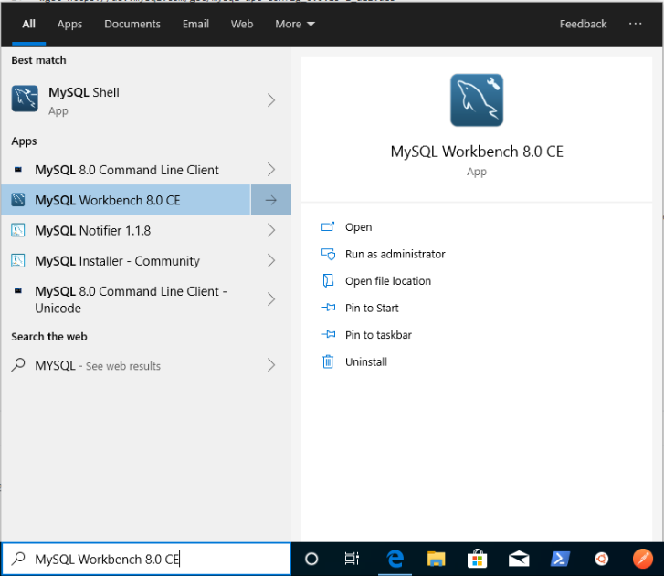
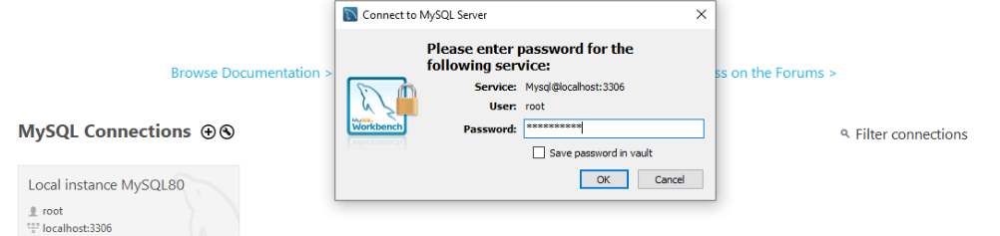
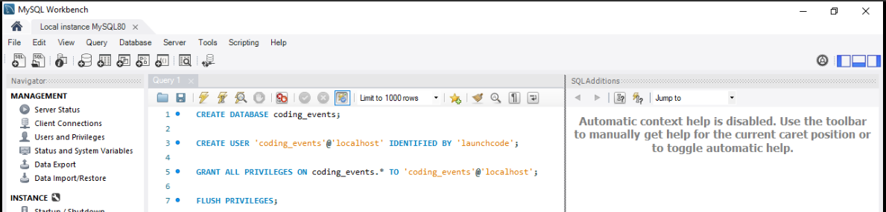
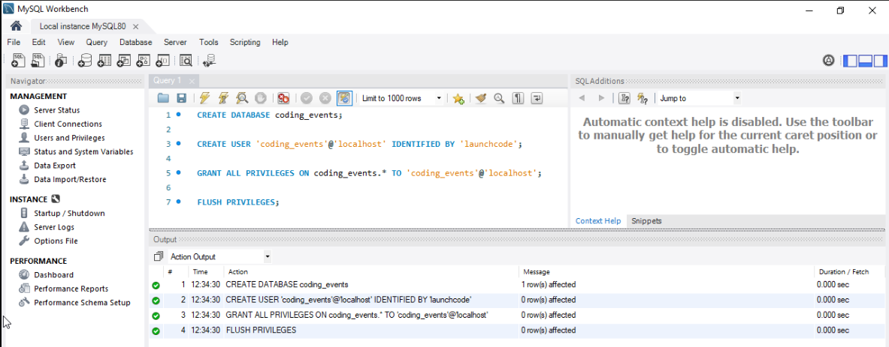
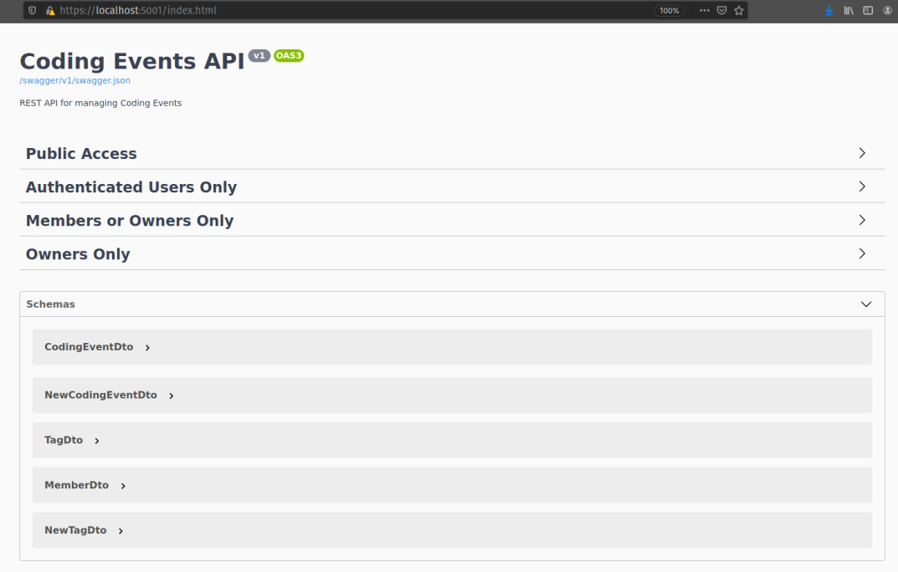

In this studio your mission is to practice accessing protected resources in the final version of the Coding Events API.
You will begin by working with the API locally to make sure that the latest updates are functioning properly. Afterwards, you will deploy the API to Azure to be served securely over HTTPS.
Before we continue let’s consider what we have already set up in the previous walkthroughs:
user_impersonation scope to protect the API by only allowing requests from the registered Postman applicationAt a high level this studio will require you to:
At the end of the studio you will share the public IP address of your deployed API to your TA for review.
Before you deploy the API you will set up a local environment to test it. For this setup you will need to:
coding_events databaseappsettings.json to integrate with AADB2CYou will use the MySQL Workbench GUI you installed in the previous unit to run the user and database setup script. This is the same script you have seen in previous deployments:
CREATE DATABASE coding_events;
CREATE USER 'coding_events'@'localhost' IDENTIFIED BY 'launchcode';
GRANT ALL PRIVILEGES ON coding_events.* TO 'coding_events'@'localhost';
FLUSH PRIVILEGES;
First open the MySQL Workbench application by searching for it in your taskbar:
Then log in to your local server instance:
In the script area paste in the setup script from above:
You can run the script using the lightning icon, ctrl+shift+enter or using the menu option at the top:
You should then see a success output from the executed script like the image below:
Recall that the Key vault that provides the database connection string, ConnectionStrings--Default, to the API is only used in the deployed Production environment.
When working locally, in the Development environment, your API will expect the default connection string to be available via the dotnet user-secrets tool. Refer to the previous chapter for a refresher on how to use this tool.
Warning
The syntax for local secret names is slightly different than what you have used for the Key vault. You will need to use ConnectionStrings:Default as the name of the local secret.
Warning
Before continuing make sure you are working from inside your forked repo directory on the 3-aadb2c branch.
In the appsettings.json project configuration file you will notice some familiar fields as well as a few new ones:
{
"Logging": {
"LogLevel": {
"Default": "Information",
"Microsoft": "Warning",
"Microsoft.Hosting.Lifetime": "Information"
}
},
"AllowedHosts": "*",
"ServerOrigin": "",
"KeyVaultName": "",
"JWTOptions": {
"Audience": "",
"MetadataAddress": "",
"RequireHttpsMetadata": true,
"TokenValidationParameters": {
"ValidateIssuer": true,
"ValidateAudience": true,
"ValidateLifetime": true,
"ValidateIssuerSigningKey": true
}
}
}
To complete this studio you will need to update the following fields before deploying the API:
KeyVaultName: populate this field after provisioning your resources used in the deploymentServerOrigin: a new field (discussed below)JWTOptions: a new object field (discussed below)ServerOrigin¶The ServerOrigin field is used to define the origin of a server. The API has been configured to use this origin for creating resource links (for actions or relations to other resources). The term origin is defined by where the server is hosted and is comprised of:
http or https)Locally, your API ServerOrigin will be:
https://localhost:5001 (as seen in the appsettings.Development.json file).However, after you deploy the API the ServerOrigin will need to be updated to reference the new location it is hosted from (the host VM’s public IP address):
https://<public IP> (where port 443 is implied by the https protocol in the origin)JWTOptions¶The JWTOptions are used to configure the JWT authentication middleware used by the API to validate the access tokens it receives. The nested TokenValidationParameters object set the boolean flags for controlling which claims in the token should be validated:
The two fields within the JWTOptions object entry that you will need to update are:
MetadataAddress: the URL of the JSON metadata document that describes the OIDC capabilities and endpoints for your AADB2C serviceAudience: the application ID (client ID) of the intended audience for the token.You may need to refer to your notes or previous walkthroughs to get these values.
Tip
Be careful with the Audience field. Consider which registered application client ID is appropriate, that of your Postman client application or of the Coding Events API. If the incorrect client ID is used you will receive a 401 response from the API.
Hint – look at the claims on the access token from the previous walkthrough. One of these client IDs refers to the authorized party while the other is the audience you are after.
coding_events database locallyJWTOptions) of your appsettings.json fileThe API serves documentation from the Swagger UI page at the root of the server. This time you will notice that the endpoints have been separated into the respective Roles (RBAC) and Attributes (ABAC) used for authorization of requests. Although you will be using Postman to issue requests, the Swagger UI is a helpful resource for exploring the endpoints and resource schemas.
Before you deploy the API you should practice making a few requests to ensure that you have configured everything properly. It is much easier to debug and fix issues locally than wasting time and resources troubleshooting a deployed application.
For this step make sure the API is listening on https://localhost:5001 (to match the pre-configured baseUrl variable in the Postman collection)
After getting everything running make requests to the following endpoints:
POST /api/eventsPOST /api/tagsPUT /api/events/{codingEventId}/tags/{tagId}DELETE /api/events/{codingEventId}The majority of this deployment will be familiar to you based on your previous learning. However, the setup scripts will be new to you.
The scripts will be responsible for:
configure-vm.sh: configures the runtime environment for the API, nearly identical to the script you wrote in your previous deploymentconfigure-ssl.sh: installs and configures the NGINX web server and provisions a self-signed certificate for serving the API over a secure connectiondeliver-deploy.sh: delivers and deploys Coding Events API as a background service running in the VMFor this deployment you will need to provision the same resources as you did in the previous studio. Configuring these resources will be similar as well, with the exception of the three new scripts that must be executed using the RunCommand console.
Rather than creating a new resource group you should provision and configure the VM and Key vault within the adb2c-deploy-rg group created in the first AADB2C walkthrough.
Note
After setting up the VM and Key vault you will need to update the entries in your appsettings.json.
Don’t forget to commit and push these changes before deploying!
Aside from the first script the other two will appear foreign to you. Even if you don’t believe that currently you are capable of writing them, you will likely surprise yourself with how much you are able understand.
Take some time to look over and discuss these scripts with your classmates and TA to decipher what they are doing. We will explore these in more detail in the upcoming scripting lessons.
Warning
You must run these scripts in the following order:
configure-vm.shconfigure-ssl.shdeliver-deploy.shThe configure-vm.sh script should look familiar to you based on the script you wrote in the previous deployment.
As mentioned previously, AADB2C requires a secure connection for authenticating and requesting an access token. In order to support the https encrypted connection a Web Server uses a SSL certificate to perform something called a TLS handshake.
Tip
The Secure Socket Layer (SSL) protocol was succeeded by the more recent Transport Layer Security (TLS) protocol. Although TLS is what is used in modern development, the term SSL was ubiquitous for so long that SSL and TLS are often used interchangeably.
If you are curious this TLS/SSL article provides a great breakdown of the history behind these protocols and terms.
In a production environment you would fully utilize Public Key Infrastructure (PKI) to ensure the security of communication between your applications and their users. However, delving into these topics would require an entire course dedicated to exploring them!
Because we are in a learning environment we will relax our security considerations and use a self-signed certificate instead. This certificate is similar to the one you set up when first running a dotnet project locally on your machine.
While all of this is complex there are numerous tools available for simplifying the process. We will narrow the scope of our learning by abstracting this process behind the configure-ssl.sh script that utilizes the following tools:
openssl: a CLI tool that will create the self-signed certificatenginx: a web server that will perform TLS/SSL termination using the self-signed certificateNote
In production settings on Linux servers NGINX is the standard because of it’s advanced features and performance.
In an upcoming lesson we will deploy the API to Windows Server and use the IIS web server instead of NGINX. On Windows server machines the Microsoft IIS web server is the clear choice because of it’s native Windows and .NET integrations.
For now all you need to understand is that within the VM there will be two Web Servers, NGINX and the built-in Kestrel Web Server of the Coding Events API. The NGINX Web Server acts as a reverse proxy (a request middle-man) for requests to and from the API.
As the middle-man, NGINX is responsible for decrypting incoming requests and encrypting outgoing responses from the API. Effectively, requests go through NGINX to reach the API.
The final script will configure the VM to run the Coding Events API as a Systemd unit instead of executing the API manually in the foreground as you have done before. Aside from how the API artifact is executed, the majority of the script (cloning and publishing) should look familiar to you.
Note
Configuring an application to run as a background service provides many benefits including:
systemctlThe deliver-deploy.sh script will require you to fill in the following two environment variables used in the delivery step:
github_username: your username used to create the URL of your forked reposolution_branch: the updated 3-aadb2c branchThis file creates a Systemd Unit file which describes the API service. In addition, it will set up a new user account: api-user. This service account can not be logged into like a traditional user account such as student.
As a security best practice, the api-user account is used exclusively to execute the API artifact that starts the underlying dotnet process of the background service.
Note
The script sets up the permissions that restrict all users except root and the api-user service account from reading, writing or executing the published API artifact.
By compartmentalizing the service account from the login account (student). An attacker who is able to enter the VM as the student user will be restricted from controlling the API service or accessing its related files.
If your request fails due to a missing access token you will, expectedly, receive a 401 (failed authentication) response:
Similarly if your access token has expired you will receive a 401 response indicating this failure in the WWW-Authenticate (challenge) header.
Refer to your notes or the previous walkthrough for a solution to this issue.
appsettings.json¶The JWT authentication middleware is fickle. As it should be – there is no margin for error in the security space of a project. In addition to the JWT settings the API will crash if the Key vault and origin values are not configured correctly.
Make sure that all of the following fields are updated before deploying the API:
ServerOrigin: available after provisioning your Azure VMKeyVaultName: available after provisioning your Azure Key vaultJWTOptions:Audience: available in the AADB2C tenant, updated in the local stepsJWTOptions:MetadataAddress: available in the AADB2C tenant, updated in the local stepsFor this deployment the API will be served over https. For security reasons AADB2C does not support authentication over insecure connections. You will need to open the correct port for your deployed API to function properly.
At the end of this setup studio you will need to provide your TA with the public IP address of your fully functional deployed API.